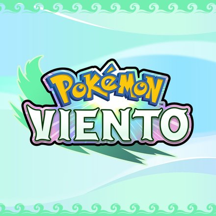
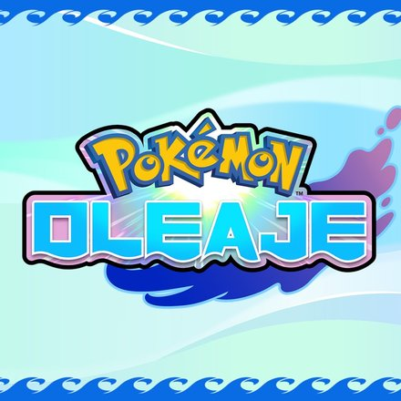
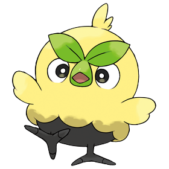
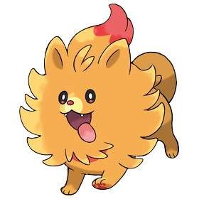
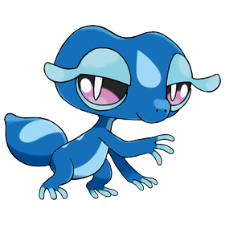

Pokémon Viento
Nintendo Switch 2 · 2027
Región por descubrir · Viento y Oleaje (2027)
Aquí irá la historia de la nueva región cuando se anuncie.
Puedes contar dónde está, cómo es, sus leyendas y el viaje del protagonista.

Nintendo Switch 2 · 2027

Nintendo Switch 2 · 2027


